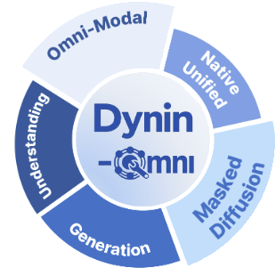
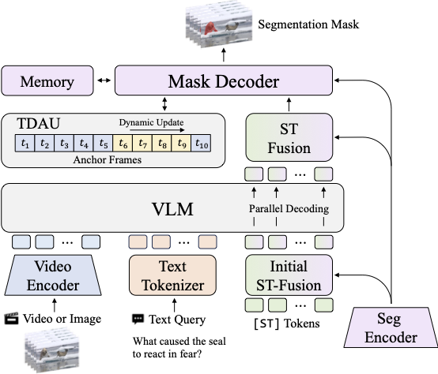
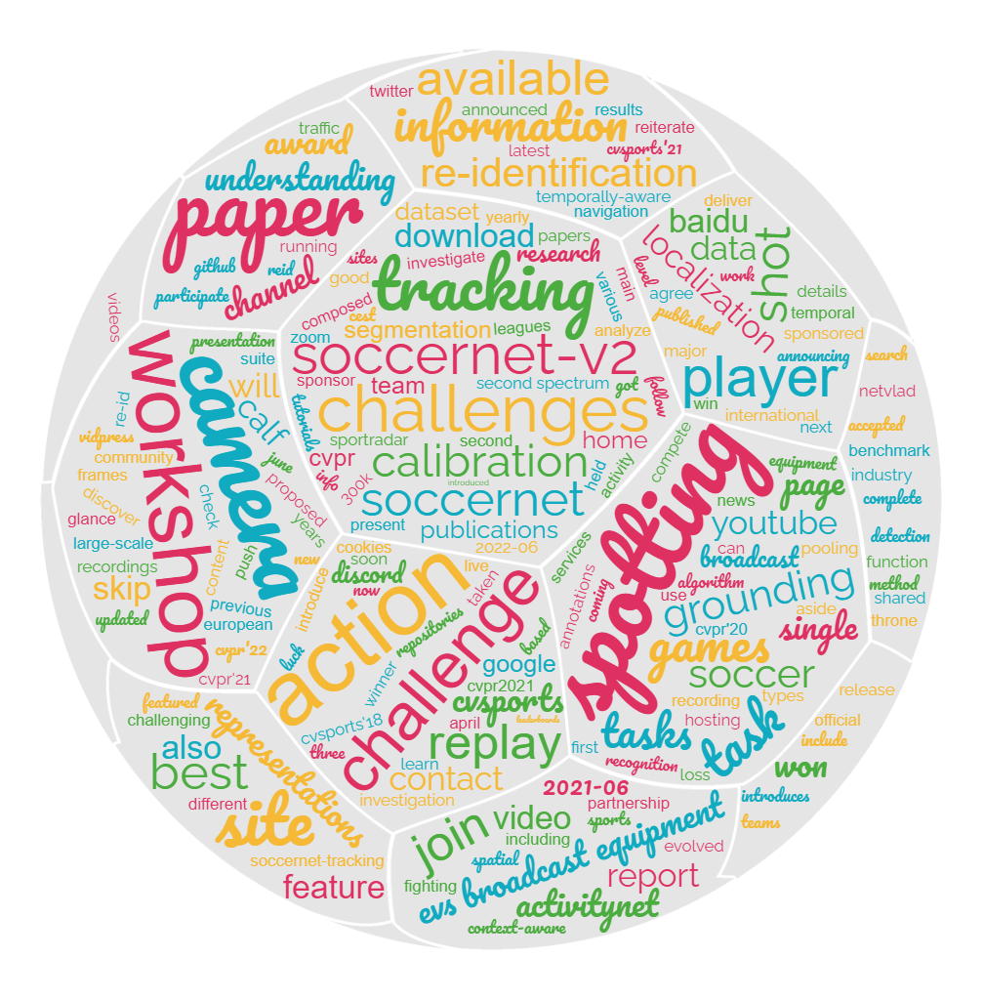
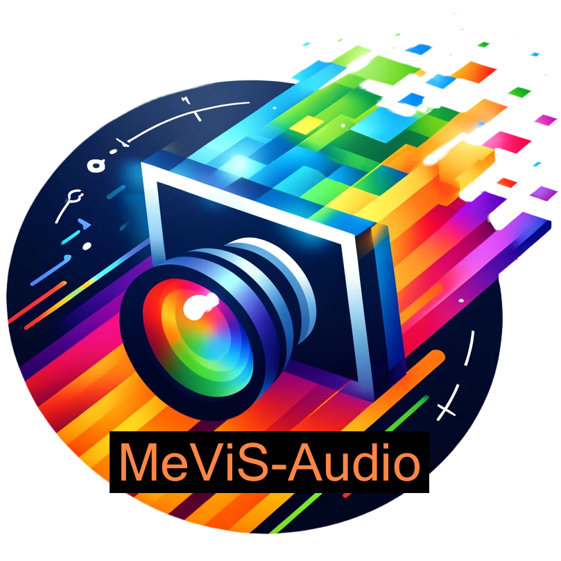
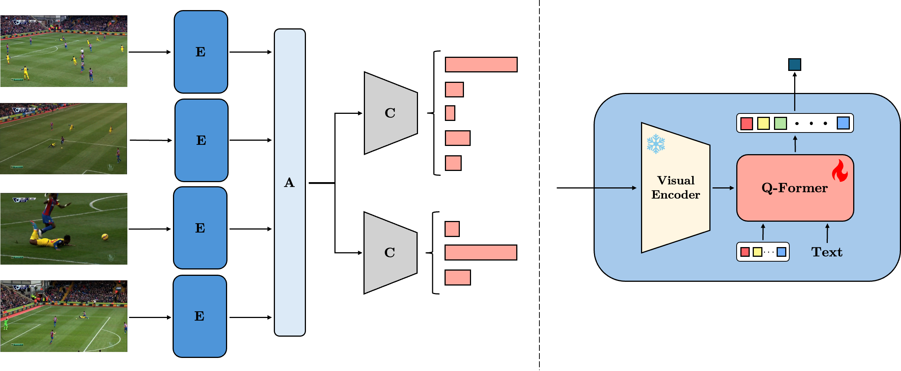
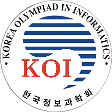

News
- [Mar. 20, 2026] Our team achieved 3rd place in the PVUW MeViS-Audio Track at CVPR 2026.
- [Mar. 9, 2026] Dynin-Omni, where I contributed to the video understanding component, was announced.
- [Feb. 23, 2026] One of my first-authored papers was accepted to CVPR 2026.
Introduction
I am a student researching computer vision and machine learning at Seoul National University, in the Department of Electrical and Computer Engineering.
I am currently interested in computer vision, especially video understanding, video generation, and 3D perception.
Education
- M.S–Ph.D. in Department of Electrical and Computer Engineering, Seoul National University (2025 – Present)
- B.S. in Computer Science and Engineering, Korea University (2019 – 2025)
Research Experiences
-
Research Assistant, AIDAS Lab, Seoul National University, Korea (Aug. 2025 – Present)
Advisor: Prof. Jaeyoung Do -
Research Intern, AIDAS Lab, Seoul National University, Korea (Jan. 2025 – Aug. 2025)
Advisor: Prof. Jaeyoung Do -
Research Intern, MLV Lab, Korea University, Korea (Jun. 2023 – Dec. 2024; now at KAIST)
Advisor: Prof. Hyunwoo J. Kim -
Research Intern, AI Lab, Korea University, Korea (Oct. 2020 – Jan. 2021)
Advisor: Prof. Dongsuk Yook
Publications




SoccerNet 2024 Challenges Results
Anthony Cioppa et al.
arXiv preprint, arXiv:2409.10587, 2024.
Awards & Honors

3rd Place, 5th PVUW Challenge MeViS-Audio Track at CVPR 2026
CVPR 2026 Pixel-level Video Understanding in-the-Wild (PVUW) Workshop
3rd Place of MeViS-Audio Track of the 5th PVUW: VIRST-Audio

2nd Place, CVPRW 2024 SoccerNet Challenge Multi-View Foul Recognition 2024
CVPR 2024 CVsports workshop
VF-VARS: Leveraging Video Foundation Models for Video Assistant Referee Systems


Silver Prize, The 29th Korea Olympiad in Informatics
Ministry of Education, Science and Technology, Republic of Korea
Academic Presentations
Video Foundation Model을 이용한 자동 축구 영상 판독 시스템
Conference on Electronics, Semiconductor, and AI 전자·반도체·인공지능 학술대회
The Institute of Electronics and Information Engineers 대한전자공학회
Patents
- To be added
Language
- Korean
- Native
- English
- Advanced
- TOEFL: 98 (CEFR level: C1)
- Chinese
- Lower Intermediate
- HSK (汉语水平考试) Level 3: 288/300
Contact
- Email: csjihwanh at snu dot ac dot kr (preferred)
- Email: csjihwanh at gmail dot com
- Email: csjihwanh at korea dot ac dot kr
- Google Scholar
- Linkedin Account
- Blog
- Personal Korean Blog (Deprecated)